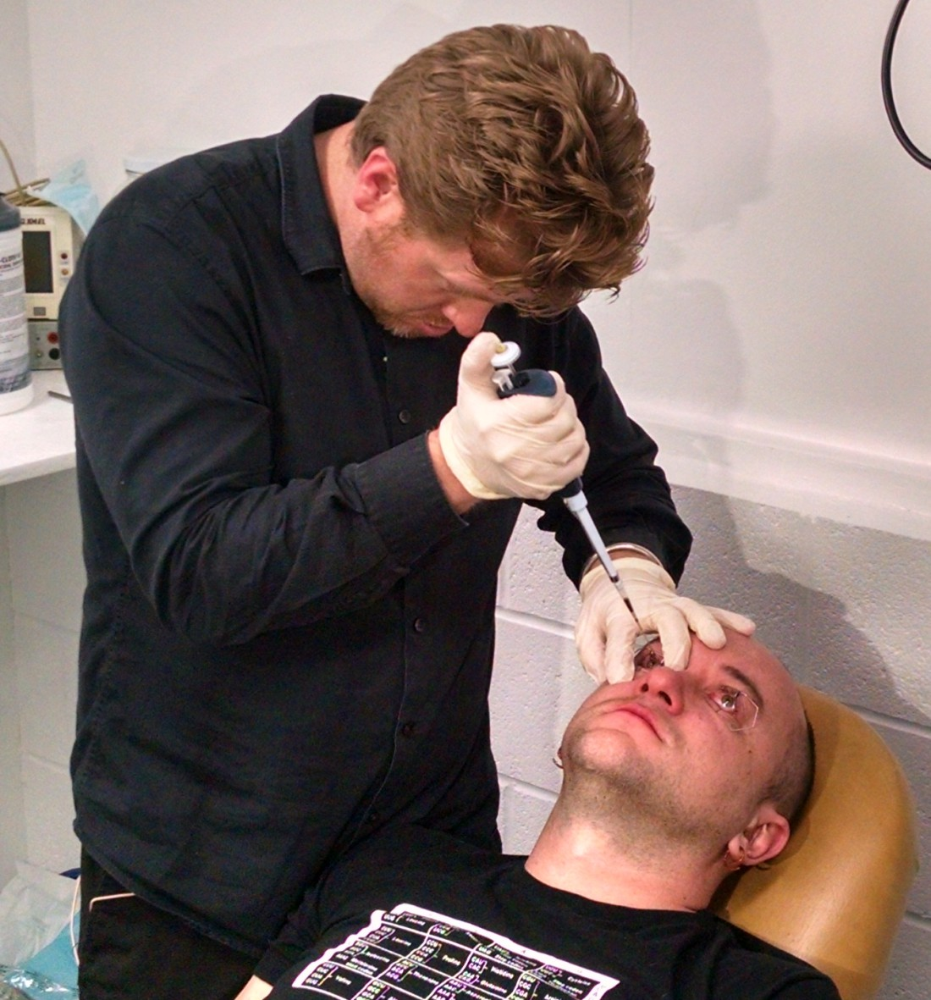
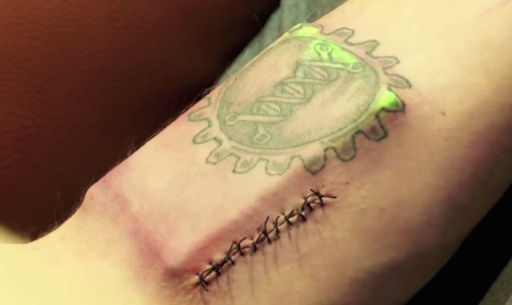

Show to AH : Bio-Hacking
Aka : How to build big thing with ambition
What is Bio-Hacking
Yes, basically, it's a biology hack.
French disclaimer
Hacking is has no relation with IT.
To hack means "Cut with rough or heavy blows"
In this context, by "hacking", we describe the following methodology :
- Get something
- Disassemble the thing
- Understand some parts of the thing
- Build something else with parts
- If necessary, remove some parts and/or add parts from other thing
Are you a hacker ?
Spoiler : Yes.
So, Can I hack everything ?
Spoiler : Yes.
- In IT, a hack is the action of understand and find a way through security
- Children learn to hack with LEGO
- In electronics (also in 3D printing, for example), we have "makers" which done the same job, without disassemble part.
- In biology, we have bio-hackers <-- That's what we'll talk about
Why we want Bio hacking ? / What is it ?
- Open
- Open-source
- Alternative economy
- DIY
- Be together
- Sharing
Take the best from urban philosophy
Say f*ck and start your lab.
For example, "La Paillasse" has been started in 2011 in a squat
Not really legal in this way :)
Understanding is the only way to improve yourself.
Who are Bio-Hackers ?
Bio hacking is biology, minus Laboratories & government.
Bio hackers are everyone, and it's why I like hacking.
- Some scientist
- You
- Your mother
- My sister
- Not my dog :(
In fact, you know some Bio hackers
- 300 before JC - Hérophile - First dissection
- 1856 - Louis Pasteur discover how fermenting works
- 1928 - Alexander Fleming discover penicillin
- 2002 - First synthetic virus
Is it safe ?
Who care about security ? ...Ok, I'm joking.
Pro
Your mentor teach security first.
The first step is always understanding
You are not alone.
Some hacks are really simple
Cons
If you hack at home, don't try to make viruses
If you hack at home, don't try to make drugs
Don't try to cut something on the body of your friend
Where can I hack ?
Everywhere. But if you want to take some fun, try some of them :
- Bricobio, Montréal
- Biohackspace, London
- La Paillasse, Paris
- Univercité, Renens
- Be open lab, Genève
Happy hacking !
Thanks for your attention
Bonus : Some links
Bonus : Some photos
Jeffrey Tibbetts trying to be a cat
Jeffrey Tibbetts trying to be a cat
This is a computer.
Neil Harbisson